Preliminaries¶
The mathematical theory of Vector Boolean Functions starts with the formal definition of vector spaces whose elements (vectors) have binary elements. Let  be the finite field of order 2, where ,
be the finite field of order 2, where ,  the ‘integer addition modulo 2’ and
the ‘integer addition modulo 2’ and  the ‘integer multiplication modulo 2’.
the ‘integer multiplication modulo 2’.  is the vector space of n-tuples of elements from
is the vector space of n-tuples of elements from  . The direct sum of and is defined as 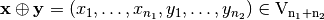. The inner product of 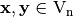 is denoted by
. The direct sum of and is defined as 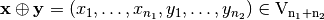. The inner product of 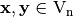 is denoted by  , and the inner product of real vectors 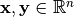 is denoted by 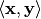.
, and the inner product of real vectors 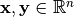 is denoted by 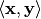.
One can now define binary functions between this type of vector spaces, whose linearity analysis (for robustness-against-attacks purposes) will become very important. 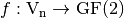 is called a Boolean function and  is the set of all Boolean functions on .
is the set of all Boolean functions on .  is the set of all linear Boolean functions on and
is the set of all linear Boolean functions on and  is the set of all affine Boolean functions
on .
is the set of all affine Boolean functions
on .
It is possible to characterize Boolean functions via alternative and very useful associated mappings. In the following, some of these mappings are presented. The real-valued mapping 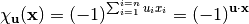 for  is called a character. The character form of
is called a character. The character form of  is defined as 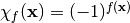. The Truth Table of
is defined as 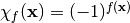. The Truth Table of  is called as the (1,-1)-sequence vector or sequence vector of
is called as the (1,-1)-sequence vector or sequence vector of  and is denoted by
and is denoted by  .
.
Let be a Boolean function; the Walsh Transform of at  is the n-dimensional Discrete Fourier Transform and can be calculated as follows:
is the n-dimensional Discrete Fourier Transform and can be calculated as follows:
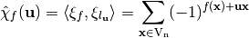
The autocorrelation of with respect to the shift is a measure of the statistical dependency among the involved variables (indicating robustness against randomness-based attacks). It is the cross-correlation of with itself, denoted by  and defined by [1]:
and defined by [1]:
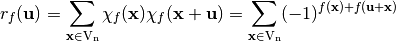
The directional derivative of in the direction of is defined by:
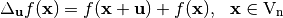
We shall call the linear kernel of the set of those vectors  such that
such that  is a constant function. The linear kernel of any Boolean function is a subspace of . Any element of the linear kernel of is said to be a linear structure of .
is a constant function. The linear kernel of any Boolean function is a subspace of . Any element of the linear kernel of is said to be a linear structure of .
Given , a nonzero function  is called an annihilator of if
is called an annihilator of if  .
.
We now extend the scope of the study by considering functions between any pair of binary-valued vector spaces. is called a Vector Boolean function and  is the set of all Vector Boolean Functions . Each
is the set of all Vector Boolean Functions . Each  is a coordinate function of
is a coordinate function of  . The indicator function of
. The indicator function of  , denoted by
, denoted by  , is defined in [ChabaudV:94] as:
, is defined in [ChabaudV:94] as:
(1)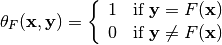
Again, several mappings associated with a Vector Boolean Functions can be defined, in similar terms to the binary functions case. Hence, the character form of can be defined as follows: . Similarly, let be a Vector Boolean function; its Walsh Transform is the two-dimensional Walsh Transform defined by:
(2)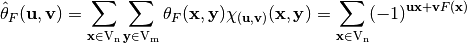
Also, the autocorrelation of with respect to the shift is the cross-correlation of with itself, denoted by , so that [fse-Nyberg:94]:
(3)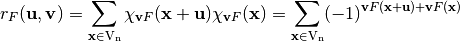
Let , then the difference Vector Boolean function of in the direction of , denoted by  is defined as follows: . If the following equality is satisfied:
is called a linear structure of .
is defined as follows: . If the following equality is satisfied:
is called a linear structure of .
Finally, we define the simplifying notation for the maximum of the absolute values of a set of real numbers , characterized by vectors and  , as: 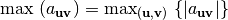. Using the same simplifying notation, we can define the 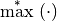 operator on a set of real numbers , as:
, as: 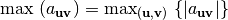. Using the same simplifying notation, we can define the 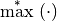 operator on a set of real numbers , as:  . This notation will be used in some criteria definitions.
. This notation will be used in some criteria definitions.
Footnotes
| [1] | Most authors omit the factor  |